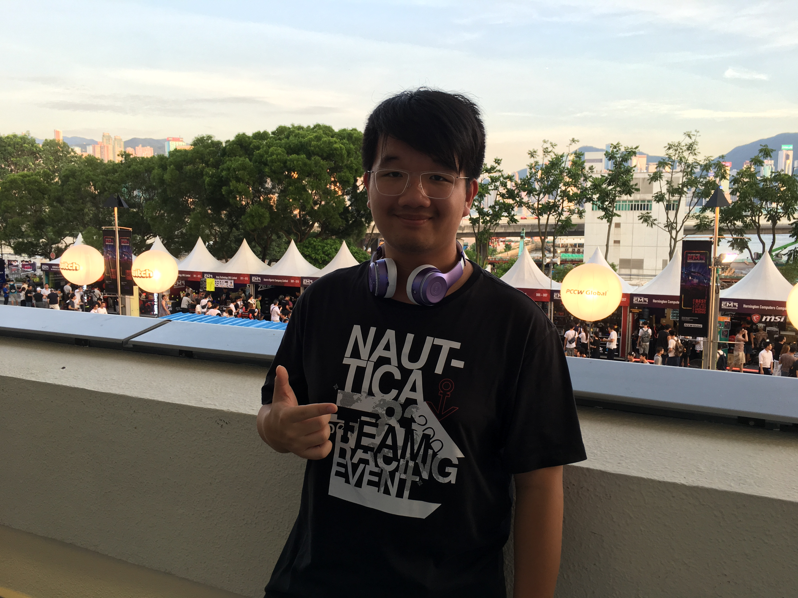

Intro

Hi there, I am Edwin Chan, a Sophomore currently studying Computer Engineering and Computer Science at University of Southern California.
I enjoy learning different new technologies and making use of them.
Education
- University of Southern California - Computer Engineering and Computer Science (Class of 2020)
GPA:
- 3.86 (Cumulative)
- 3.92 (Spring 2017)
- 4.00 (Fall 2017)
- Member of Golden Key International Honour Society
- Member of Makers at USC, an Electrical Engineering Club
Work
I am a developer and hackathon enthusiast. I enjoy working with different people, and love to try out different technologies. I have built applications in different languages. For my projects, you can see them on Github, and on DevPost.
Internships
- Mentor for Front-end development at AthenaHacks 2017
- Digital and Signal Processing Laboratory, Faculty of Electronic Engineering, Chinese University of Hong Kong (Summer, 2014) -
Single-handedly wrote code and designed graphic user-interface of a voice-recognition deviceintended for the deaf and mute (Written in Python and ran the program on a Raspberry Pi)
- Shun Hing Technology Co. Ltd (Hong Kong, 1 week, 2014)
Awards
- Best Use of Amazon Web Services(ViHack) – YHack 2017
- A React-native application using machine learning to suggest which insurance plan should consumers buy based on their demographics. We also performed data visualization on the provided data set of 1.428 million users to figure out relationships between different variables.
- Scholarship for outstanding performance in Rite of Passage (RoP) Programme 2013
- RoP is a 28-day adventure in Queensland involving expeditions, rock-climbing and abseiling
- First Place, Junior Secondary Division, HK Youth Science & Technology Innovation Competition 2013
- Team Leader, Award for the Most Outstanding 11th Grade Exhibit of the Yale Science & Engineering Association, Intel International Science and Engineering Fair – HK Nomination 2013
- Team Leader, Honorable Mention, Junior Section, HK Student Science Project Competition 2013
- Team Leader, 2nd Runner-up and Best Presentation Award, Junior Section, HK Student Science Project Competition 2012
- Member, 1st Runner Up, Most Creative Proposal Award, HK Budding Scientists Award 2011/12
Experience
Programming Languages:
- C++
- Java
- Python
- Verilog
- HTML & CSS
- Javscript
Technologies:
- Embedded Systems on Arduino
- Object-Oriented programming and Full-Stack Development
- React-Native & Expo
- Google-Map & Google Places API
Projects
ViHack

ViHack is a React-native application using machine learning to suggest which insurance plan should consumers buy based on their demographics. We also performed data visualization on the provided data set of 1.428 million users to figure out relationships between different variables. It is built during YHack2017 and won the Best Use of Amazon Web Services award.
More Details can be viewed on DevPost.

Sleeping Mask (Side Project at Makers at USC)
The sleep mask project was built during my freshman year. We built a sleeping mask to enhance sleeping experience by waking users at the optimal time in the sleeping cycle, using Adafruit Flora.